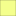

<!doctype html>
<html lang="en">
    <head>
        <meta charset="utf-8">
        <meta http-equiv="X-UA-Compatible" content="IE=edge">
        <meta name="viewport" content="initial-scale=1,user-scalable=no,maximum-scale=1,width=device-width">
        <meta name="mobile-web-app-capable" content="yes">
        <meta name="apple-mobile-web-app-capable" content="yes">
        <link rel="stylesheet" href="css/leaflet.css">
        <link rel="stylesheet" href="css/qgis2web.css"><link rel="stylesheet" href="css/fontawesome-all.min.css">
        <style>
        html, body, #map {
            width: 100%;
            height: 100%;
            padding: 0;
            margin: 0;
        }
        </style>
        <title></title>
    </head>
    <body>
        <div id="map">
        </div>
        <script src="js/qgis2web_expressions.js"></script>
        <script src="js/leaflet.js"></script>
        <script src="js/leaflet.rotatedMarker.js"></script>
        <script src="js/leaflet.pattern.js"></script>
        <script src="js/leaflet-hash.js"></script>
        <script src="js/Autolinker.min.js"></script>
        <script src="js/rbush.min.js"></script>
        <script src="js/labelgun.min.js"></script>
        <script src="js/labels.js"></script>
        <script src="data/Lmitecomunal_1.js"></script>
        <script src="data/LocalidadesRurales_2.js"></script>
        <script src="data/TtulosdemercedComunidadesindgenas_3.js"></script>
        <script>
        var highlightLayer;
        function highlightFeature(e) {
            highlightLayer = e.target;

            if (e.target.feature.geometry.type === 'LineString') {
              highlightLayer.setStyle({
                color: '#ffff00',
              });
            } else {
              highlightLayer.setStyle({
                fillColor: '#ffff00',
                fillOpacity: 1
              });
            }
        }
        var map = L.map('map', {
            zoomControl:true, maxZoom:12, minZoom:10
        }).fitBounds([[-38.919457451393505,-73.1810206422519],[-38.47984236569316,-72.67193682768946]]);
        var hash = new L.Hash(map);
        map.attributionControl.setPrefix('<a href="https://github.com/tomchadwin/qgis2web" target="_blank">qgis2web</a> &middot; <a href="https://leafletjs.com" title="A JS library for interactive maps">Leaflet</a> &middot; <a href="https://qgis.org">QGIS</a>');
        var autolinker = new Autolinker({truncate: {length: 30, location: 'smart'}});
        var bounds_group = new L.featureGroup([]);
        function setBounds() {
            map.setMaxBounds(map.getBounds());
        }
        map.createPane('pane_ESRIMaps_0');
        map.getPane('pane_ESRIMaps_0').style.zIndex = 400;
        var layer_ESRIMaps_0 = L.tileLayer('https://server.arcgisonline.com/ArcGIS/rest/services/World_Imagery/MapServer/tile/{z}/{y}/{x}', {
            pane: 'pane_ESRIMaps_0',
            opacity: 1.0,
            attribution: '',
            minZoom: 10,
            maxZoom: 12,
            minNativeZoom: 0,
            maxNativeZoom: 18
        });
        layer_ESRIMaps_0;
        map.addLayer(layer_ESRIMaps_0);
        function pop_Lmitecomunal_1(feature, layer) {
            layer.on({
                mouseout: function(e) {
                    for (i in e.target._eventParents) {
                        e.target._eventParents[i].resetStyle(e.target);
                    }
                },
                mouseover: highlightFeature,
            });
            var popupContent = '<table>\
                    <tr>\
                        <td colspan="2">' + (feature.properties['Localidad'] !== null ? autolinker.link(feature.properties['Localidad'].toLocaleString()) : '') + '</td>\
                    </tr>\
                </table>';
            layer.bindPopup(popupContent, {maxHeight: 400});
        }

        function style_Lmitecomunal_1_0() {
            return {
                pane: 'pane_Lmitecomunal_1',
                opacity: 1,
                color: 'rgba(219,58,58,1.0)',
                dashArray: '10,5',
                lineCap: 'butt',
                lineJoin: 'miter',
                weight: 4.0, 
                fill: true,
                fillOpacity: 1,
                fillColor: 'rgba(229,182,54,0.0)',
                interactive: false,
            }
        }
        map.createPane('pane_Lmitecomunal_1');
        map.getPane('pane_Lmitecomunal_1').style.zIndex = 401;
        map.getPane('pane_Lmitecomunal_1').style['mix-blend-mode'] = 'normal';
        var layer_Lmitecomunal_1 = new L.geoJson(json_Lmitecomunal_1, {
            attribution: '',
            interactive: false,
            dataVar: 'json_Lmitecomunal_1',
            layerName: 'layer_Lmitecomunal_1',
            pane: 'pane_Lmitecomunal_1',
            onEachFeature: pop_Lmitecomunal_1,
            style: style_Lmitecomunal_1_0,
        });
        bounds_group.addLayer(layer_Lmitecomunal_1);
        map.addLayer(layer_Lmitecomunal_1);
        function pop_LocalidadesRurales_2(feature, layer) {
            layer.on({
                mouseout: function(e) {
                    for (i in e.target._eventParents) {
                        e.target._eventParents[i].resetStyle(e.target);
                    }
                },
                mouseover: highlightFeature,
            });
            var popupContent = '<table>\
                    <tr>\
                        <th scope="row">Nombre localidad</th>\
                        <td>' + (feature.properties['Nombre localidad'] !== null ? autolinker.link(feature.properties['Nombre localidad'].toLocaleString()) : '') + '</td>\
                    </tr>\
                    <tr>\
                        <th scope="row">Código INE</th>\
                        <td>' + (feature.properties['Código INE'] !== null ? autolinker.link(feature.properties['Código INE'].toLocaleString()) : '') + '</td>\
                    </tr>\
                </table>';
            layer.bindPopup(popupContent, {maxHeight: 400});
        }

        function style_LocalidadesRurales_2_0() {
            return {
                pane: 'pane_LocalidadesRurales_2',
                opacity: 1,
                color: 'rgba(35,35,35,1.0)',
                dashArray: '',
                lineCap: 'butt',
                lineJoin: 'miter',
                weight: 1.0, 
                fill: true,
                fillOpacity: 1,
                fillColor: 'rgba(89,203,225,1.0)',
                interactive: true,
            }
        }
        map.createPane('pane_LocalidadesRurales_2');
        map.getPane('pane_LocalidadesRurales_2').style.zIndex = 402;
        map.getPane('pane_LocalidadesRurales_2').style['mix-blend-mode'] = 'normal';
        var layer_LocalidadesRurales_2 = new L.geoJson(json_LocalidadesRurales_2, {
            attribution: '',
            interactive: true,
            dataVar: 'json_LocalidadesRurales_2',
            layerName: 'layer_LocalidadesRurales_2',
            pane: 'pane_LocalidadesRurales_2',
            onEachFeature: pop_LocalidadesRurales_2,
            style: style_LocalidadesRurales_2_0,
        });
        bounds_group.addLayer(layer_LocalidadesRurales_2);
        map.addLayer(layer_LocalidadesRurales_2);
        function pop_TtulosdemercedComunidadesindgenas_3(feature, layer) {
            layer.on({
                mouseout: function(e) {
                    for (i in e.target._eventParents) {
                        e.target._eventParents[i].resetStyle(e.target);
                    }
                },
                mouseover: highlightFeature,
            });
            var popupContent = '<table>\
                    <tr>\
                        <th scope="row">Nombre com</th>\
                        <td>' + (feature.properties['Nombre com'] !== null ? autolinker.link(feature.properties['Nombre com'].toLocaleString()) : '') + '</td>\
                    </tr>\
                    <tr>\
                        <th scope="row">TM</th>\
                        <td>' + (feature.properties['TM'] !== null ? autolinker.link(feature.properties['TM'].toLocaleString()) : '') + '</td>\
                    </tr>\
                </table>';
            layer.bindPopup(popupContent, {maxHeight: 400});
        }

        function style_TtulosdemercedComunidadesindgenas_3_0() {
            return {
                pane: 'pane_TtulosdemercedComunidadesindgenas_3',
                opacity: 1,
                color: 'rgba(38,38,38,1.0)',
                dashArray: '',
                lineCap: 'butt',
                lineJoin: 'miter',
                weight: 1, 
                fill: true,
                fillOpacity: 1,
                fillColor: 'rgba(244,255,141,1.0)',
                interactive: true,
            }
        }
        map.createPane('pane_TtulosdemercedComunidadesindgenas_3');
        map.getPane('pane_TtulosdemercedComunidadesindgenas_3').style.zIndex = 403;
        map.getPane('pane_TtulosdemercedComunidadesindgenas_3').style['mix-blend-mode'] = 'normal';
        var layer_TtulosdemercedComunidadesindgenas_3 = new L.geoJson(json_TtulosdemercedComunidadesindgenas_3, {
            attribution: '',
            interactive: true,
            dataVar: 'json_TtulosdemercedComunidadesindgenas_3',
            layerName: 'layer_TtulosdemercedComunidadesindgenas_3',
            pane: 'pane_TtulosdemercedComunidadesindgenas_3',
            onEachFeature: pop_TtulosdemercedComunidadesindgenas_3,
            style: style_TtulosdemercedComunidadesindgenas_3_0,
        });
        bounds_group.addLayer(layer_TtulosdemercedComunidadesindgenas_3);
        map.addLayer(layer_TtulosdemercedComunidadesindgenas_3);
        var baseMaps = {};
        L.control.layers(baseMaps,{' Títulos de merced (Comunidades indígenas)': layer_TtulosdemercedComunidadesindgenas_3,' Localidades Rurales': layer_LocalidadesRurales_2,' Límite comunal': layer_Lmitecomunal_1,"ESRI Maps": layer_ESRIMaps_0,},{collapsed:false}).addTo(map);
        setBounds();
        </script>
    </body>
</html>
